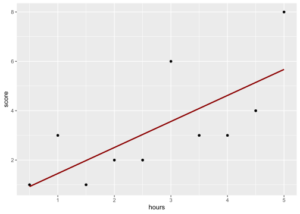

library(tidyverse)Calculating the Slope and Intercept
Data Analysis for Psychology in R 2
In this document we are going to work through the hand calculations for a simple linear model.
Packages
For this example we will only need the tidyverse package.
Data
Below is code to create the data we used in lecture. As this is a small example data set, we can make the tibble manually, rather than import it. The structure is pretty simple. On the left of the = we name the variable, on the right we enter the data.
test <- tibble(
student = paste(rep("id",10),1:10, sep=""),
hours = seq(0.5,5,.5),
score = c(1,3,1,2,2,6,3,3,4,8)
)The tibble function is pretty smart, and it defaults to setting the type of variable based on how you enter values. The glimpse() function allows us to look at the structure of our dataset. The str() function is pretty useful too.
glimpse(test)Rows: 10
Columns: 3
$ student <chr> "id1", "id2", "id3", "id4", "id5", "id6", "id7", "id8", "id9",…
$ hours <dbl> 0.5, 1.0, 1.5, 2.0, 2.5, 3.0, 3.5, 4.0, 4.5, 5.0
$ score <dbl> 1, 3, 1, 2, 2, 6, 3, 3, 4, 8str(test)tibble [10 × 3] (S3: tbl_df/tbl/data.frame)
$ student: chr [1:10] "id1" "id2" "id3" "id4" ...
$ hours : num [1:10] 0.5 1 1.5 2 2.5 3 3.5 4 4.5 5
$ score : num [1:10] 1 3 1 2 2 6 3 3 4 8We can see student is being recognised as a character vector, and our variable hours and score variables as dbl or numeric.
Calculating the Slope
From lecture, we can calculate the slope using the following:
\[ \hat \beta_1 = \frac{SP_{xy}}{SS_x} \]
Where \(SP_{xy}\) = sum of cross-products:
\[ SP_{xy} = \sum_{i = 1}^{n}(x_i - \bar{x})(y_i - \bar{y}) \]
and \(SS_x\) = sums of squared deviations of \(x\):
\[ SS_x = \sum_{i = 1}^{n}(x_i - \bar{x})^2 \]
Sum of cross-products
\[ SP_{xy} = \sum_{i=1}^{n}(x_i - \bar{x})(y_i - \bar{y}) \]
Let’s break down what this is doing. The \(\sum_{i=1}^{n}\) is telling us that we need to perform the action that follows for each individual (\(i\)) for all rows of data (\(n\)).
The two terms in parentheses require us to subtract the mean of \(x\) (\(\bar{x}\)) and the mean of \(y\) (\(\bar{y}\)) from the individual values of \(x\) and \(y\) for each row of data or participant. We know this because these are subscripted with \(i\). In other words, for each person, we are calculating the deviation of their individual scores from the means.
We then multiply the deviations for each person. Once we have these for everyone, we sum them up.
What we are going to do now is add columns to our data set that represent the steps in this calculation. In our example, \(x\) = hours and \(y\) = score. First, lets add both means.
calc <- test |>
mutate(
m_hours = mean(hours),
m_score = mean(score)
) |>
select(1,2,4,3,5)
calc# A tibble: 10 × 5
student hours m_hours score m_score
<chr> <dbl> <dbl> <dbl> <dbl>
1 id1 0.5 2.75 1 3.3
2 id2 1 2.75 3 3.3
3 id3 1.5 2.75 1 3.3
4 id4 2 2.75 2 3.3
5 id5 2.5 2.75 2 3.3
6 id6 3 2.75 6 3.3
7 id7 3.5 2.75 3 3.3
8 id8 4 2.75 3 3.3
9 id9 4.5 2.75 4 3.3
10 id10 5 2.75 8 3.3We use mutate to create new variables and add them to our data set. Notice for both m_hours and m_score the values in each row are the same. That is because there is only one mean. By default, mutate includes this for every row. I have used select to reorder the columns so the variable containing the values and the mean are next to one another. The numbers refer to the column numbers.
Next, we can calculate the deviances:
calc <- calc |>
mutate(
dev_hours = hours - mean(hours),
dev_score = score - m_score
) |>
select(1:3, 6, 4,5,7)
calc# A tibble: 10 × 7
student hours m_hours dev_hours score m_score dev_score
<chr> <dbl> <dbl> <dbl> <dbl> <dbl> <dbl>
1 id1 0.5 2.75 -2.25 1 3.3 -2.3
2 id2 1 2.75 -1.75 3 3.3 -0.300
3 id3 1.5 2.75 -1.25 1 3.3 -2.3
4 id4 2 2.75 -0.75 2 3.3 -1.3
5 id5 2.5 2.75 -0.25 2 3.3 -1.3
6 id6 3 2.75 0.25 6 3.3 2.7
7 id7 3.5 2.75 0.75 3 3.3 -0.300
8 id8 4 2.75 1.25 3 3.3 -0.300
9 id9 4.5 2.75 1.75 4 3.3 0.7
10 id10 5 2.75 2.25 8 3.3 4.7 Again, we calculated two new variables and reordered the data set.
The last step is to multiply the two deviances for each person.
calc <- calc |>
mutate(
SPXYi = dev_hours * dev_score
)
calc# A tibble: 10 × 8
student hours m_hours dev_hours score m_score dev_score SPXYi
<chr> <dbl> <dbl> <dbl> <dbl> <dbl> <dbl> <dbl>
1 id1 0.5 2.75 -2.25 1 3.3 -2.3 5.18
2 id2 1 2.75 -1.75 3 3.3 -0.300 0.525
3 id3 1.5 2.75 -1.25 1 3.3 -2.3 2.88
4 id4 2 2.75 -0.75 2 3.3 -1.3 0.975
5 id5 2.5 2.75 -0.25 2 3.3 -1.3 0.325
6 id6 3 2.75 0.25 6 3.3 2.7 0.675
7 id7 3.5 2.75 0.75 3 3.3 -0.300 -0.225
8 id8 4 2.75 1.25 3 3.3 -0.300 -0.375
9 id9 4.5 2.75 1.75 4 3.3 0.7 1.23
10 id10 5 2.75 2.25 8 3.3 4.7 10.6 And there we go. Our SPXYi variable contains the product of the deviations of each observation from the means of hours studied and test score. Our final step is just to add this up.
SPXY <- sum(calc$SPXYi)
SPXY[1] 21.75Sum of square deviations
So now to calculate \(SS_x\). Let’s look at the equation again:
\[ SS_x = \sum_{i=1}^{n}(x_i - \bar{x})^2 \]
What do you notice?
Well, we have already calculated the individual deviations \((x_1 - \bar{x}), \dots, (x_n - \bar{x})\). They are the column called dev_hours in the calc table. So all we need to do is square these for each observation and sum them.
calc <- calc |>
mutate(
SSxi = dev_hours^2
)
calc# A tibble: 10 × 9
student hours m_hours dev_hours score m_score dev_score SPXYi SSxi
<chr> <dbl> <dbl> <dbl> <dbl> <dbl> <dbl> <dbl> <dbl>
1 id1 0.5 2.75 -2.25 1 3.3 -2.3 5.18 5.06
2 id2 1 2.75 -1.75 3 3.3 -0.300 0.525 3.06
3 id3 1.5 2.75 -1.25 1 3.3 -2.3 2.88 1.56
4 id4 2 2.75 -0.75 2 3.3 -1.3 0.975 0.562
5 id5 2.5 2.75 -0.25 2 3.3 -1.3 0.325 0.0625
6 id6 3 2.75 0.25 6 3.3 2.7 0.675 0.0625
7 id7 3.5 2.75 0.75 3 3.3 -0.300 -0.225 0.562
8 id8 4 2.75 1.25 3 3.3 -0.300 -0.375 1.56
9 id9 4.5 2.75 1.75 4 3.3 0.7 1.23 3.06
10 id10 5 2.75 2.25 8 3.3 4.7 10.6 5.06 and
SSx = sum(calc$SSxi)
SSx[1] 20.625Return to the Slope
We now have the two values we need to calculate the slope:
\[ \hat \beta_1 = \frac{SP_{xy}}{SS_x} = \frac{21.75}{20.625} = 1.054545 \]
beta1_hat <- SPXY/SSx
beta1_hat[1] 1.054545Calculating the Intercept
Calculations for intercept:
\[ \hat \beta_0 = \bar{y} - \hat \beta_1 \bar{x} \]
So this one is much easier as all we need are:
- \(\hat \beta_1\) = slope estimate
- \(\bar{y}\) = mean of \(y\)
- \(\bar{x}\) = mean of \(x\)
So…
beta0_hat <- mean(calc$score) - (beta1_hat * mean(calc$hours))
beta0_hat[1] 0.4Keep a note of these values.
ggplot(data = test, aes(x=hours, y=score)) +
geom_point() +
geom_smooth(method = lm,
se = F,
colour = "darkred")
m1 <- lm(score ~ hours, data = test)
summary(m1)
Call:
lm(formula = score ~ hours, data = test)
Residuals:
Min 1Q Median 3Q Max
-1.6182 -1.0773 -0.7454 1.1773 2.4364
Coefficients:
Estimate Std. Error t value Pr(>|t|)
(Intercept) 0.4000 1.1111 0.360 0.7282
hours 1.0545 0.3581 2.945 0.0186 *
---
Signif. codes: 0 '***' 0.001 '**' 0.01 '*' 0.05 '.' 0.1 ' ' 1
Residual standard error: 1.626 on 8 degrees of freedom
Multiple R-squared: 0.5201, Adjusted R-squared: 0.4601
F-statistic: 8.67 on 1 and 8 DF, p-value: 0.01858